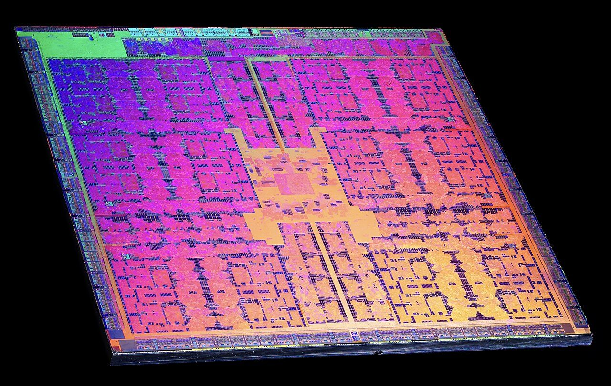
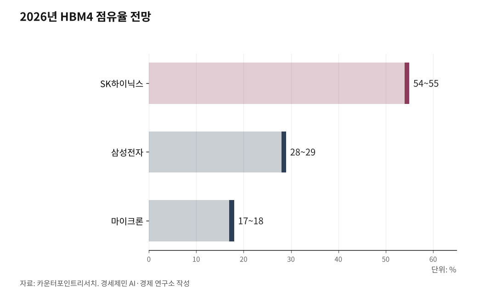

젠슨 황이 한국에 온 이유, 그게 내 지갑까지 오는 길
세상은 AI로 흐르고 한국은 메모리·로봇 부품을 쥐었다…그 호황이 내 휴대폰값으로 돌아오는 역설
인하대 해양AI융합센터 김갑봉 연구교수 | 젠슨 황 엔비디아 최고경영자(CEO)가 또 한국에 왔다. 지난해 10월에 이어 7개월 만이고, 2년 연속이다.

그는 4가지 신제품을 '선물'로 들고 왔다. 그런데 물음이 남는다. 세계에서 가장 바쁜 AI 기업 수장이 왜 자꾸 한국부터 찾을까. 그 방문이 내 일자리와 지갑에는 무슨 상관일까. 그 답을 따라가 본다.
1. 왜 하필 한국인가
황 CEO는 김포공항에서 이유를 직접 밝혔다. 한국은 AI와 로봇공학 역량이 뛰어나고 세계적인 제조 기반을 갖춰 연구개발 투자에 가장 알맞은 곳이라고 했다.
말로만 그친 게 아니다. 엔비디아는 서울에 AI 기술센터를 세우기로 하고, 이미 연구 인력 채용에 들어갔다. 가상 공간에 공장과 도시를 만들어 로봇을 미리 훈련시키는 일을 한다. 대학·기업 연구진과 함께 사람을 닮은 로봇 AI를 가다듬는 것이 목표다. 황 CEO는 인력이 갖춰지면 부지도 마련하겠다고 했다.
뿌리는 지난해 10월로 거슬러 간다. 엔비디아는 그때 현대차그룹·정부와 손잡고, AI 계산용 칩(GPU) 5만장 공급과 센터 설립을 약속했다. 이번이 7개월 만이고, 최태원 SK그룹 회장과는 그사이 여섯 번을 만났다. 이번 홍대 삼겹살 회동에는 구광모 LG그룹 회장, 이해진 네이버 의장도 함께했다.
세상이 AI로 흐르는 지금, 엔비디아가 한국을 고른 이유는 분명하다. 칩에 들어갈 메모리와 로봇을 만들 공장이 한곳에 모인 나라이기 때문이다.

2. HBM4 왕좌, 삼성 추격
그 가운데 핵심이 HBM(고대역폭메모리)이다. 칩을 위로 여러 장 쌓아 자료를 빠르게 주고받게 만든 메모리로, AI 계산에 없어서는 안 된다. 가장 앞선 6세대가 HBM4다.
이 시장은 오래도록 SK하이닉스가 앞섰다. 엔비디아에 들어갈 HBM4 물량은 SK하이닉스가 약 70%를 가져갈 것으로 투자은행 UBS는 봤다. 검증된 양산 기술과 엔비디아와 쌓은 오랜 신뢰가 바탕이다.
삼성전자가 거세게 따라붙고 있다. 삼성은 2026년 2월 HBM4 양산에 들어갔고, 동작 속도 11.7Gbps로 업계 최고 성능을 내세웠다. 메모리와 위탁생산(파운드리)을 한 회사가 함께 대는 '원스톱' 전략이 무기다.
시장조사업체 카운터포인트리서치는 2026년 HBM4 점유율을 SK하이닉스 54~55%, 삼성전자 28~29%, 마이크론 17~18%로 전망했다. 트렌드포스 집계에서는 1분기 D램 매출에서 삼성이 점유율 38.5%로 1위에 올랐다.
두 회사가 양강을 이루면서, 한국은 AI 시대 핵심 부품을 손에 쥐었다.
3. 로봇 부품도 한국이 쥔다
황 CEO가 가져온 선물 가운데 젯슨 토르는 사람을 닮은 로봇에 들어가는 두뇌다. 이 두뇌가 일하려면 움직이는 몸이 있어야 한다.
휴머노이드 로봇은 관절이 약 40개에 이른다. 산업용 로봇이 6개인 것과 견주면 훨씬 많다. 그만큼 관절을 돌리는 감속기와 구동장치(액추에이터)가 많이 든다. 감속기는 모터 힘을 정밀하게 조절하는 부품이다.
여기서 한국 기업이 뛴다. 현대차그룹은 2028년부터 미국 공장에 로봇을 넣고 연 3만대 양산 체제를 갖추겠다고 밝혔다. 부품을 대는 현대모비스는 액추에이터를 자체 생산으로 돌리고 있다.
중소기업도 나섰다. 에스피지는 로봇 감속기 세 종류를 모두 만들고, 에스비비테크는 정밀 감속기를 자체 개발해 천안에 공장을 세웠다. 미국 로봇 기업들이 중국산 부품을 줄이려는 흐름도 한국에 기회다.
다만 한계도 뚜렷하다. 가장 정밀한 하모닉 감속기는 아직 일본 하모닉드라이브가 70∼80%를 쥐고 있다. 한국이 메모리만큼 로봇 부품을 장악했다고 보기엔 이르다.
4. 그 호황이 내 지갑으로
여기까지는 좋은 소식이다. 그런데 이 호황은 뜻밖의 방향으로 내게 돌아온다.
메모리 회사들이 돈이 되는 HBM에 생산 설비를 몰자, 값싼 일반 메모리가 모자라졌다. 그 결과 메모리값이 치솟았다. 트렌드포스 집계로 2026년 1분기 일반 D램 계약가격은 석 달 새 93∼98% 올랐다. 거의 두 배다.
값은 곧 완제품으로 옮겨붙었다. 스마트폰과 PC 제조 원가에서 메모리가 차지하는 몫이 15∼20%에 이르기 때문이다. 갤럭시 S26 기본·플러스 모델은 전작보다 약 10만∼12만원(9%) 올랐고, 가장 비싼 울트라 1TB 모델은 214만원에서 254만5000원으로 40만원 넘게 뛰었다. 삼성전자는 메모리값과 환율 탓이라고 밝혔다.
노트북도 마찬가지다. 일부 제품은 1년 새 100만원 가까이 올랐다. 메모리를 미리 사두고 되파는 '램테크'라는 말까지 나왔다.
칩값이 물가를 밀어 올린다 해서 '칩플레이션'이라 부른다. 한국 기업이 누리는 호황이, 한국 소비자 지갑을 무겁게 하는 역설이다.
5. 이 호황 언제까지
그렇다면 이 호황은 언제까지 갈까.
과거 메모리값은 3∼4년 주기로 오르내렸다. 수요가 늘면 값이 뛰고, 너도나도 공장을 늘리면 다시 떨어지는 식이었다. 이번엔 AI라는 새 수요가 끌어서 결이 다르다는 분석이 많다. 공급을 단번에 늘리기 어려운 점도 값을 떠받친다. 새 공장을 짓고 장비를 들이는 데 시간이 걸리기 때문이다.
다만 끝나는 시점은 전망이 엇갈린다. 마이클 델 델테크놀로지스 회장은 메모리 부족이 2028년에서 2029년까지 이어질 수 있다고 봤다. 수요가 공급을 한참 앞질러 생산 용량이 못 따라간다는 이유에서다. 반면 일부 투자은행은 2027년께 고비가 올 수 있다고 본다.
변수는 역시 AI다. AI 서비스가 투자한 만큼 돈을 벌지 못하면, 호황은 예상보다 빨리 식을 수 있다. 막대한 투자가 거품이라는 경계론도 한쪽에서 나온다.
지금 한국은 세상이 흐르는 한가운데에 서 있다. 그 자리를 얼마나 오래 지키느냐가, 우리 경제와 내 지갑이 맞을 다음 장을 가른다.
※ 이 기사는 AI 프로그램 클로드를 활용해 작성했다.
참고문헌
· 「엔비디아, AI 기술센터 설립…장소 "서울 유력"」, ZDNet Korea, 2026.6.5., https://zdnet.co.kr/view/?no=20260605214402
· 「엔비디아, '피지컬 AI' 박사급 채용...한국 AI 기술센터 설립 기대감」, 한국일보, 2026.6.5., https://www.hankookilbo.com/news/article/A2026060518230003408
· 「격화된 HBM4 경쟁···'속공'으로 SK하이닉스 추격 나선 삼성전자」, 시사저널e, 2026.1.29., https://www.sisajournal-e.com/news/articleView.html?idxno=418878
· 「HBM4 석 달, 삼성은 '최초'·SK는 '수율 안정'…엔비디아 수주 승자는」, 초이스스탁US, 2026.5., https://www.choicestock.co.kr/stock/news_view/131793
· 「현대차그룹, 2028년 美서 휴머노이드 3만대 양산 추진」, 뉴시스, 2026.5.19., https://www.newsis.com/view/NISX20260519_0003635156
· 「현대차, 휴머노이드에 국산 감속기 채택한다」, 디일렉, 2026.3.3., https://www.thelec.kr/news/articleView.html?idxno=52966
· 「'칩플레이션 vs. 소비자 전가'…갤럭시 S26 가격 분석」, 시사오늘, 2026.2.27., http://www.sisaon.co.kr/news/articleView.html?idxno=180960
· 「칩플레이션 때문에…노트북 100만원↑, 게임기까지 도미노 인상」, 한국경제, 2026.4.12., https://www.hankyung.com/article/2026041245197
· 「"2분기 범용 D램 가격 1분기보다 최대 63% 상승 전망"」, 아이뉴스24, 2026.6.2.(트렌드포스 보고서 인용), https://v.daum.net/v/20260602162249035
· 「[반도체 인사이드] 메모리 슈퍼사이클, 언제까지?···엇갈린 전망」, 블로터, 2026.2.5.
· 「[오늘의 DT인] "반도체 역사상 가장 긴 슈퍼사이클… 2029년까지 이어질 수도"」, 디지털타임스, 2026.5.21., https://v.daum.net/v/20260521061515790
사진 출처
· [대표사진] Flickr - Fritzchens Fritz, "Nvidia GM200 GeForce GTX 980 Ti die shot.jpg", 위키미디어 공용, CC0, https://commons.wikimedia.org/wiki/File:Nvidia_GM200_GeForce_GTX_980_Ti_die_shot.jpg
※ 이 기사는 인공지능을 활용해 작성했습니다.
관련기사
- 젠슨 황이 한국에 남긴 두 가지 숙제, 일자리와 전기
- 젠슨 황이 두고 간 4가지, 한국 반도체에 무엇을 남기나
- [AI동향] AI 패권 경쟁의 병목은 메모리, 9월 반도체 수출 603억 달러
- [AI동향] 오픈AI, AI가 쓴 수학 논문 722편 공개…하루 만에 3편 철회
저작권자 © AI경세제민 무단전재 및 재배포, AI학습 및 활용 금지